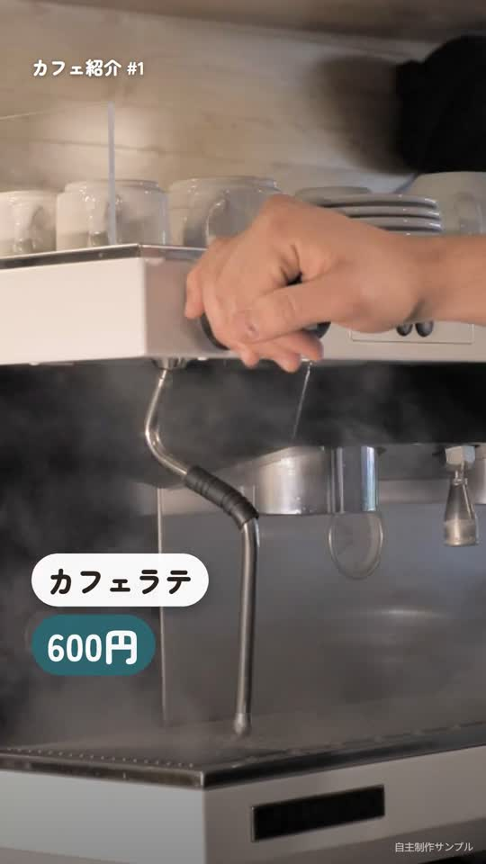
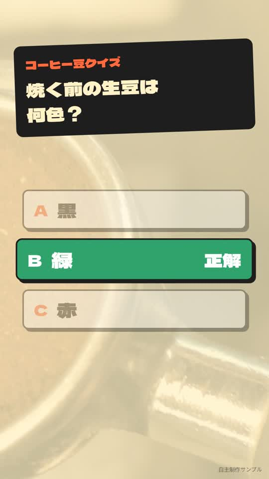

VIDEO WORKS
動画サンプル
- 3min 08secテロップ本編
- 30secBefore／After比較
- 3reels縦型ショート動画
- 6thumbsサムネイル
ビジネス解説風の動画にテロップ・図解・強調演出を付けています同じ映像・同じ音声で自動字幕のままの表示とデザイン済みテロップを並べたBefore／After（30秒）も置いています
テロップ編集の詳細を見る


スタイルごとに書体・テロップの形・カットの間隔を変えています再生は詳細ページで行えます
縦型ショート動画の詳細を見る